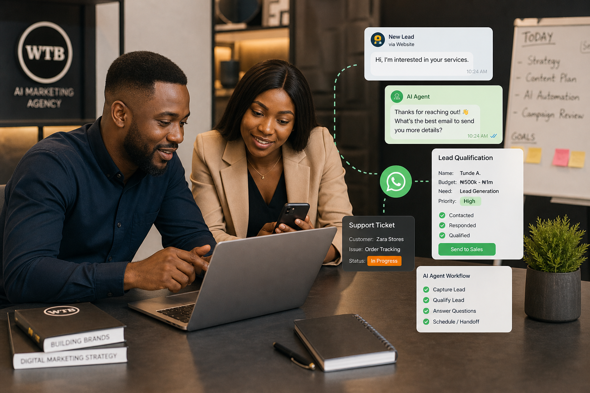

Start with one repetitive workflow, such as qualifying leads, answering common questions, booking appointments or following up. Give the agent your real business information, define when a human must take over, and measure the business result before expanding.
What an AI agent actually does
An AI agent is more than a chatbot that replies to a question. It can interpret a request, use approved business information, follow rules, take a sequence of actions and hand the conversation to a person when the situation needs judgement.
For a Nigerian business, that might mean receiving an enquiry from a website or WhatsApp, asking the right qualifying questions, recording the details, sending the correct next step and alerting a sales person when the lead is ready.
Choose the business problem before the tool
Do not begin with “Which AI platform is popular?†Begin with “Where are we losing time, money or customers?†Look at missed enquiries, slow follow-up, repeated questions, manual booking, content approvals, proposal preparation and reporting.

Four practical first agents
1. Lead qualification agent
It asks about the customer’s need, budget, location, timeline and fit, then sends serious enquiries to your team.
2. Customer-service agent
It answers approved FAQs about products, delivery, opening hours, pricing ranges or next steps while escalating sensitive cases.
3. Appointment agent
It collects the details needed for a booking, offers available options and reminds the customer without forcing your staff to repeat the same conversation.
4. Internal marketing agent
It helps your team turn briefs, customer questions and campaign data into drafts, reports and next actions for human review.
Why context decides whether the agent is useful
An agent trained on vague instructions will produce vague work. Give it your services, prices or pricing boundaries, customer types, locations, policies, brand voice, examples of good replies, escalation rules, opening hours, delivery realities and the words your customers actually use.
The more useful context you provide, the less the agent has to guess. That improves accuracy, reduces awkward replies and makes the output feel like your business instead of a generic software demo.
Keep a human in the right places
Automation should make your team faster, not make customers feel abandoned. Define a clear human handoff for complaints, unusual requests, payments, sensitive information, negotiation, refunds and any situation where the agent is uncertain.
How to measure the first 30 days
- Average first-response time
- Percentage of enquiries properly qualified
- Human handoff rate and handoff quality
- Booked calls, appointments or completed purchases
- Questions the agent still cannot answer safely
What WTB does differently
WTB does not begin by slapping a random AI tool onto your company. We map the workflow, clarify the business goal, organise the information the system needs, design the conversation, create the handoff rules, connect the right channels and improve the agent from real use.
If the right answer is not an AI agent yet, we will say so. Sometimes the best first move is a cleaner website, better lead tracking, a WhatsApp process or a readiness audit.
Build the right first agent
Bring WTB the bottleneck, not a shopping list of tools.
Tell us where enquiries, follow-up or repeated work are slowing your business down. We will recommend a practical starting point.
Related reading: AI agent consulting in Nigeria and what an AI agent can do for a business.